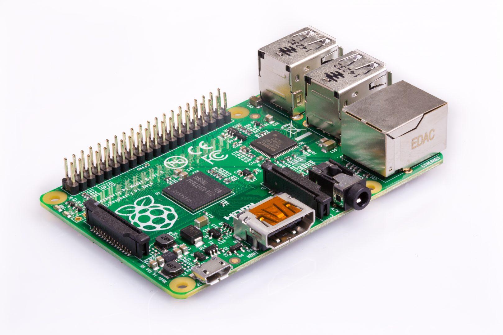

Raspberry Pi 1 & 2 (raspberry-pi)
Jump to navigation
Jump to search
|  | |
| Manufacturer | Raspberry Pi Foundation |
|---|---|
| Name | Raspberry Pi 1 & 2 |
| Codename | raspberry-pi |
| Released | 2013 |
| Category | testing |
| Original software | Raspbian |
| Hardware | |
| Chipset |
[[Broadcom BCM2835 Broadcom BCM2836]] |
| CPU |
ARM1176JZF-S @ 700 MHz 4x ARM Cortex-A7 @ 900 MHz |
| GPU | Broadcom VideoCore IV |
| Display | HDMI port |
| Storage | MicroSDHC slot |
| Memory | 256/512/1024 MB |
| Architecture | armhf |
| Type | Single Board Computer |
| Unixbench Whet/Dhry score | 89.3 |
{kind=link}
| USB Networking |
Unavailable
|
|---|---|
| Flashing |
Unavailable
|
| Touchscreen |
Unavailable
|
| Display |
Works
|
| WiFi |
Unavailable
|
| FDE | |
| Mainline |
Works
|
| Battery |
Unavailable
|
| 3D Acceleration | |
| Audio | |
| Bluetooth | |
| Camera |
Unavailable
|
| GPS |
Unavailable
|
| Mobile data |
Unavailable
|
| SMS |
Unavailable
|
| Calls |
Unavailable
|
| USB OTG / USB-C Role switching | |
| NFC | |
| Accelerometer |
Unavailable
|
|---|---|
| Magnetometer | |
| Ambient Light | |
| Proximity | |
| Hall Effect | |
| Barometer | |
| Power Sensor | |
| Camera Flash | |
|---|---|
| Keyboard | |
| Touchpad | |
| USB-A | |
| HDMI/DP | |
| Ir TX | |
| Ir RX | |
| Stylus | |
| Haptics | |
| Ethernet | |
| FOSS bootloader | |
Contributors
Installation
1. Follow the steps on Installation_guide#Initialization
2. Choose the raspberry-pi device
3. Select the kernel for your Raspberry Pi version
[10:47:03] Which kernel do you want to use with your device?
[10:47:03] Available kernels (2):
[10:47:03] * rpi: Kernel for the Raspberry Pi 1
[10:47:03] * rpi2: Kernel for the Raspberry Pi 2
4. Start the build process and install the completed image to a sdcard
$ ./pmbootstrap.py install --sdcard /dev/sdX
(replace /dev/sdX with the device for your sdcard)
5. Place the sdcard into the Raspberry Pi and boot it
See also
- The Raspberry Pi has a pre-existing port of Alpine Linux
- It should be possible to convert the pre-existing RPi Alpine install to a pmOS install.
- #1137 Testing out Hildon and XFCE4 (other UIs did not work at all?) on Raspberry Pi after converting the Alpine installation
- librerpi - a Free Software firmware for the Pi.
- #1501 initial PR
- pmaports!125 New device: Raspberry Pi Zero with Ethernet over USB enabled
- Summary of accelerated video status as of August 2021